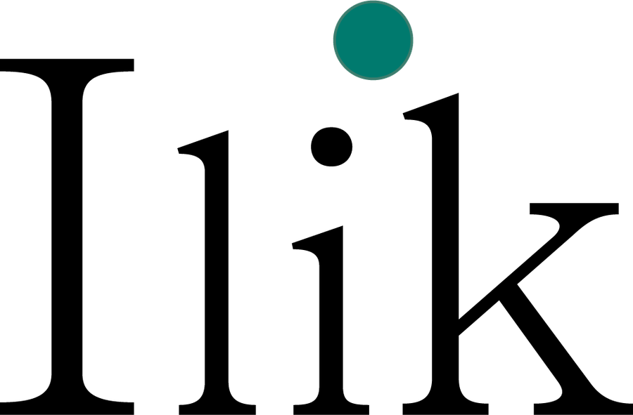

Diagnóstico ejecutivo
Informe ejecutivo para finanzas a partir de su Kardex: cada hallazgo con su cifra, su evidencia y un siguiente paso.
4 semanasCuando los registros de compra se cuentan por cientos de miles, la visibilidad real del gasto se diluye. Convertimos su Kardex y sus datos de compra en un diagnóstico de gasto que finanzas puede defender.
Metodología escalable a todo tipo de industrias. Primer vertical: hospitales privados en México.
Caso real anonimizado, conciliado contra el Kardex original con 0.0% de diferencia no explicada. Cifras presentadas como efecto ilustrativo de la metodología.
Datos públicos e investigación propia sobre el gasto hospitalario en México. Cada cifra con su fuente.

Durante ocho años trabajé desde la perspectiva del laboratorio en el mercado hospitalario privado. En una ocasión, un hospital compartió su historial de consumos para que le presentáramos una oferta de valor. Entre líneas, el mensaje casi siempre era el mismo: «mejórame el precio». Para diseñar una propuesta ganar-ganar teníamos tres objetivos: asegurar la penetración del catálogo, balancear el mix precio-volumen y, en consecuencia, maximizar el share of wallet.
Al adentrarme en la información, la taxonomía era prácticamente inexistente. Entre cientos de miles de registros en crudo, identificar una oportunidad o proponer una eficiencia operativa era técnicamente imposible.
Ahí entendí que, a veces, el volumen de información es tan abrumador que los mismos hospitales pierden la visibilidad real de lo que compran. De la necesidad de resolver eso nació Ilik.
No entrego reportes genéricos ni dashboards que no cambian ninguna decisión. Identifico las fugas y las oportunidades reales en sus datos y le presento la estrategia para materializarlas en su operación.
Hay cosas que no negocio: nunca voy a mentir, inflar un indicador o inventar un resultado, y su información es confidencial sin excepción.
Ricardo Rodríguez Escamilla, fundador
Primer verticalHospitales privados en México, por la experiencia reciente de su fundador: más de ocho años al frente de la inteligencia comercial del canal hospitalario privado en la industria farmacéutica.
Probamos sugerir sustituciones automáticas por precio. El modelo emparejaba antibióticos de reserva con antibióticos de primera línea: más barato en el papel, inválido en la clínica.
Desde entonces, cada hallazgo se enruta según quién debe decidir. Ilik aporta la evidencia; la decisión clínica es del comité.
Cuesta menos, pero clínicamente no son intercambiables.
Si los datos no la cumplen, ajustamos el alcance y mantenemos la fecha.
Sale cuandoEl diccionario de datos está reconstruido y hay un veredicto escrito de si el archivo es analizable.
Sale cuandoCada cambio queda registrado en bitácora y la tasa de normalización está declarada.
Sale cuandoCada hueco está clasificado como aleatorio o estructural. Ningún dato se inventa.
Sale cuandoLa cobertura por valor supera el umbral y los artículos de mayor gasto fueron revisados por una persona.
Sale cuandoCada hallazgo tiene magnitud en pesos y pasó una prueba de robustez.
Sale cuandoEl total analizado amarra con su Kardex y toda diferencia tiene un motivo escrito.
Sale cuandoEl entregable sostiene una sola idea central, con su evidencia y un siguiente paso.
Sin separar la compra real de la rotación interna, el gasto se sobreestima 2.12 veces. El pipeline aisló la compra real del resto y dejó cuatro preguntas, antes sin respuesta, con una vía de solución concreta.
Se corrige: se negocia, se estandariza o se elige mejor proveedor. Fue un tercio del exceso (32.5%).
Es mercado: inflación, tipo de cambio, desabasto. Mirando hacia atrás no se recupera, y sumarlo infla el ahorro.
Cifras de un caso real anonimizado (siete meses de compras de farmacia de un hospital privado), presentadas como efecto ilustrativo de la metodología. Millones de pesos redondeados; el 32.5% se calcula sobre cifras sin redondear.
¿Cuánto de su gasto es compra real?Lo medimos con su propio Kardex, en un diagnóstico ejecutivo de 4 semanas.
Solicitar diagnóstico →De diagnóstico a decisión, en tres fases.
Informe ejecutivo para finanzas a partir de su Kardex: cada hallazgo con su cifra, su evidencia y un siguiente paso.
4 semanasEl pipeline completo en una categoría, con retorno medible.
6 a 8 semanasTodo el gasto de la organización, con reportes recurrentes y reconciliación en cada corte.
TrimestralInversión: cotización a medida tras el diagnóstico inicial, según alcance y tamaño del hospital.
Cada hallazgo del diagnóstico llega con su cifra, la evidencia que la sostiene y una acción concreta para dirección.
Ejemplo ilustrativo con datos ficticios. La estructura es la que recibe el cliente.
No se comparten fuera del diagnóstico. El caso se documenta de forma anónima, sin identificar a la institución. Antes de recibir cualquier archivo firmamos un Convenio de Confidencialidad.
Un export de su sistema (Kardex u otro reporte de compras). El pipeline hace el resto.
El export que ya genera su sistema de inventarios o ERP, en Excel (.xls o .xlsx) o CSV. Si el sistema parte el reporte en varias hojas o archivos, nosotros lo consolidamos. No necesitamos acceso a su sistema ni datos de pacientes.
Siempre lo están. Medimos qué tan sucios vienen y lo declaramos en el diagnóstico.
¿Y esos reportes le generan eficiencias? ¿Tienen impacto en decisiones de negocio? Ilik no se enfoca en producir reportes; se enfoca en detectar oportunidades y, más importante, en presentar la mejor manera de atacarlas y materializarlas.
Hallazgos con cifra, prioridad y un siguiente paso concreto.
En cuatro semanas, un diagnóstico de gasto con cada cifra conciliada contra su origen.
Cuéntenos qué información de compras tiene su organización y le proponemos fecha para una primera llamada.
Se abrió su programa de correo con los datos escritos. Solo presione Enviar.
¿No se abrió? Envíela por otro canal, con el mismo texto:
¿Una pregunta rápida antes de enviar información? Le respondemos personalmente.
Teléfono y WhatsApp331 087 4987
Sus datos se tratan conforme a nuestro Aviso de Privacidad. Antes de recibir cualquier archivo firmamos un Convenio de Confidencialidad.